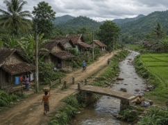
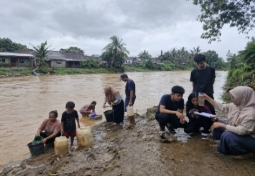
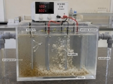
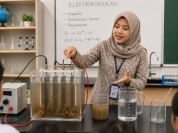

Sebelum Pertemuan 1
Pretest CPSS · PCK · EA
Instrumen pembuka satu semester, identik dengan posttest di akhir. Terhubung ke NIM Anda dan hanya terbuka setelah diaktifkan dosen dari dasbor monitoring.
Bagian A · Esai CPSS (7 Indikator)
- Fluency — Soal 1

Wacana (Soal 1–3). Desa Mekarsari terletak di tepi Sungai Cibanten. Selama musim hujan, air sungai yang menjadi sumber utama kebutuhan warga berubah menjadi sangat keruh dan berwarna kecoklatan. Hasil pengamatan sederhana kelompok karang taruna:Air keruh membuat warga kesulitan memperoleh air bersih untuk diminum, dimasak, dan dicuci. Pak Rahmat, seorang dosen fisika, memperkenalkan alat elektrokoagulasi: alat ini mengalirkan arus listrik searah (DC) dari aki/adaptor melalui dua lempeng logam (elektroda aluminium/besi) yang dicelupkan ke air keruh, sehingga elektroda melepaskan ion logam yang mengikat partikel kotoran hingga menggumpal (flok) dan mengendap.Parameter Hasil Pengamatan Standar PERMENKES 492/2010 Warna Kecoklatan Tidak berwarna Kekeruhan Sangat keruh Maks. 25 NTU Bau Sedikit berbau lumpur Tidak berbau pH 6,5 6,5–8,5 Berdasarkan wacana di atas, kemukakan minimal 5 gagasan solusi sederhana untuk menjernihkan air sungai yang keruh di Desa Mekarsari, selain menggunakan alat elektrokoagulasi. Gagasan harus dapat diterapkan warga desa dengan alat dan bahan yang mudah diperoleh. - Flexibility — Soal 2(Wacana sama seperti Soal 1.)Analisislah pemanfaatan alat elektrokoagulasi sederhana untuk mengatasi keruhnya air sungai dari minimal 4 perspektif berbeda. Pilih dari sudut pandang: fisika, kimia, biologi, teknologi sederhana, sosial-ekonomi, atau kebijakan/lingkungan.
- Originality — Soal 3(Wacana sama seperti Soal 1.)Rancanglah satu modifikasi inovatif pada alat elektrokoagulasi milik Pak Rahmat · pada bagian elektroda, sumber energi, bentuk reaktor, atau penambahan tahapan. Sertakan alasan ilmiah sederhana mengapa modifikasi tersebut dianggap baru/lebih baik daripada rancangan umum.
- Elaboration — Soal 4Setelah memperkenalkan alat kepada warga, Pak Rahmat meminta mahasiswa Andi menyusun prosedur penggunaan. Prosedur versi Andi:
- Siapkan ember berisi air sungai yang keruh.
- Masukkan dua lempeng logam ke dalam ember hingga saling menempel agar arus mengalir lebih kuat.
- Sambungkan kabel ke aki tanpa memperhatikan kutub positif dan negatif.
- Nyalakan arus listrik dan biarkan selama 2 jam agar air benar-benar jernih.
- Setelah selesai, langsung minum air hasil olahan tanpa proses tambahan.
Evaluasilah prosedur Andi di atas, lalu susun kembali prosedur yang lengkap, sistematis, dan benar yang mencakup 4 komponen: (1) alat & bahan yang dibutuhkan, (2) langkah pengoperasian yang benar, (3) parameter penting (waktu, tegangan, jenis elektroda), serta (4) antisipasi kesalahan. - Problem Identification — Soal 5

Desa Mekarsari di tepi Sungai Cibanten (Kab. Serang, Banten) menggantungkan kebutuhan air pada aliran sungai. Selama musim hujan, karang taruna bersama Bu Nurtati (dosen fisika) mengamati kualitas air 3 hari berturut-turut di 3 titik (hulu, tengah, hilir), hasil rata-ratanya:Parameter Hasil Pengamatan Standar PERMENKES 32/2017 Warna Kecoklatan (±80 TCU) Maks. 50 TCU Kekeruhan Sangat keruh (±120 NTU) Maks. 25 NTU Bau Berbau tanah Tidak berbau pH 6,5 6,5–8,5 (a) Identifikasi minimal 3 parameter kualitas air yang menyimpang dari standar. (b) Telusuri faktor penyebab terjadinya penyimpangan pada masing-masing parameter tersebut berdasarkan data di atas. - Solution Planning — Soal 6Bu Rima bersama mahasiswa melakukan uji coba 3 variasi alat elektrokoagulasi (E1, E2, E3) dengan perbedaan jenis elektroda & tegangan, terhadap sampel air Sungai Cibanten (kekeruhan awal ±120 NTU):Standar acuan penerapan di Desa Mekarsari: kekeruhan akhir maks. 25 NTU; waktu operasi maks. 20 menit; tegangan maks. 12 V DC (agar aman dioperasikan warga dengan aki sederhana).
Variasi Elektroda Tegangan (V) Arus (A) Kekeruhan Akhir (NTU) Waktu (menit) E1 Besi (Fe) 9 1,5 38 25 E2 Aluminium (Al) 12 2,5 18 20 E3 Aluminium (Al) 24 4,0 12 15 (a) Evaluasilah kelayakan operasional tiap variasi (E1, E2, E3) terhadap standar acuan. (b) Rencanakan langkah sistematis (minimal 4 langkah) pemilihan & penerapan variasi terpilih di Desa Mekarsari. (c) Berdasarkan \(W = V \times I \times t\), hitung energi listrik (joule & kWh) yang digunakan tiap variasi dalam satu kali proses. - Solution Implementation — Soal 7Variasi E2 (elektroda aluminium, 12 V DC, 20 menit) terbukti paling layak di laboratorium. Pak Rahmat menantang mahasiswa merancang sistem implementasi yang utuh di Desa Mekarsari, dengan fakta tambahan: aliran listrik PLN sering padam saat musim hujan; warga belum terbiasa mengoperasikan alat listrik mandiri; kebutuhan air bersih ±200 L/keluarga/hari; tidak semua warga bersedia mengonsumsi air olahan tanpa proses pendukung; elektroda aluminium menipis setelah ±30 kali pemakaian.(a) Rancanglah inovasi sistem alat penjernihan air (gambaran umum, komponen, alur kerja terintegrasi) yang mengantisipasi kendala lapangan di atas. (b) Jika sumber cadangan berasal dari aki 12 V berkapasitas 40 Ah yang diisi ulang panel surya, hitunglah energi listrik (Wh) yang dibutuhkan untuk satu siklus operasi, dan tentukan berapa kali siklus operasi yang dapat dilakukan sebelum aki perlu diisi ulang.
Bagian B · Esai PCK (5 Indikator)
- Content Knowledge — Soal 1

Sebuah unit elektrokoagulasi dioperasikan dengan elektroda aluminium, tegangan DC 12 V, arus 3 A, selama 30 menit. Air sungai berpartikel koloid tersuspensi dialirkan melalui reaktor. Setelah proses berlangsung, terlihat flok-flok putih terbentuk dan mengendap, sehingga air keluar tampak lebih jernih.Jelaskan mekanisme fisika yang mendasari terbentuknya flok-flok aluminium tersebut. Kaitkan dengan konsep transfer muatan listrik dan Hukum Faraday dalam konteks pemurnian air melalui elektrokoagulasi. - Curriculum Knowledge — Soal 2Seorang guru fisika ingin menyusun RPP/modul ajar yang mengintegrasikan topik elektrokoagulasi sebagai konteks pembelajaran fisika berbasis isu lingkungan, dan perlu memastikan kesesuaiannya dengan Capaian Pembelajaran (CP) yang berlaku.Analisis di mana topik elektrokoagulasi paling tepat diposisikan dalam materi pembelajaran Fisika SMA. Berikan alasan berdasarkan keterkaitan konsep fisika yang terlibat serta tujuan pembelajaran yang ingin dicapai siswa.
- Instructional Strategies — Soal 3Zahra, mahasiswa Pendidikan Fisika yang sedang PPL di SMA, diminta mengajarkan aplikasi listrik arus searah (DC) dalam kehidupan nyata kepada siswa kelas XII menggunakan konteks pemurnian air. Fasilitas lab terbatas: baterai 9 V, kawat tembaga, kabel, dan gelas beker; air sumur sekolah tampak keruh setelah hujan deras.Rancanglah satu skenario pembelajaran selama 2 × 45 menit menggunakan model pembelajaran berbasis inkuiri untuk topik ini, dan kaitkan fenomena yang diamati dengan konsep fisika DC yang dipelajari siswa.
- Student Understanding — Soal 4Dalam diskusi kelas, seorang siswa SMA menyatakan: "Saya pikir elektroda aluminium dalam elektrokoagulasi hanya berfungsi sebagai penghantar listrik saja, sama seperti kabel. Ion-ion yang menjernihkan air berasal dari garam yang sengaja ditambahkan ke dalam air, bukan dari elektroda." Beberapa siswa lain tampak menyetujui pernyataan tersebut.Evaluasilah letak miskonsepsi siswa tersebut, dan rancang satu pertanyaan efektif untuk menuntun siswa menyadari serta memperbaiki miskonsepsinya secara mandiri.
- Assessment — Soal 5Seorang guru fisika akan menyelenggarakan praktikum elektrokoagulasi sederhana untuk mengolah air keruh dari kolam sekolah.

Guru ingin menilai secara komprehensif: (1) pemahaman konsep fisika, (2) keterampilan proses sains selama praktikum, dan (3) kemampuan mengaitkan hasil percobaan dengan konsep fisika relevan · dan merasa tes pilihan ganda biasa tidak cukup untuk menangkap ketiganya.Rancang rubrik observasi keterampilan proses sains dan laporan praktikum sebagai asesmen autentik untuk praktikum ini. Jelaskan apa yang dinilai pada masing-masing instrumen, cara penilaiannya, dan mengapa kombinasi keduanya lebih valid dibanding hanya tes pilihan ganda.
Bagian C · Angket Environmental Awareness (EA)
30 pernyataan, 5 dimensi. Skala 1 (Sangat Tidak Setuju / Sangat Jarang) – 4 (Sangat Setuju / Selalu). Jawablah sesuai kondisi nyata Anda, bukan kondisi ideal.
1234
Dimensi 1 · Pengetahuan Isu Lingkungan
1. Saya dapat membedakan jenis kekeringan (meteorologis, hidrologis, agrikultural) serta dampaknya terhadap ketersediaan air bersih.
2. Saya mampu membaca data kualitas air (TDS, BOD, COD, E. coli) dan membandingkannya dengan standar WHO/Permenkes.
3. Saya memahami prinsip dan keterbatasan teknologi pengolahan air (biosand filter, RO, koagulasi, UV-LED, SODIS).
4. Saya mampu menganalisis pengaruh El Niño dan perubahan iklim terhadap ketersediaan air di Indonesia.
5. Saya mampu menggunakan isu krisis air sebagai konteks pembelajaran fisika yang bermakna.
6. Saya belum dapat membedakan jenis kontaminan air dan metode pengolahan yang tepat untuk masing-masing jenisnya. (unfavorable)
Dimensi 2 · Sikap terhadap Lingkungan
7. Saya yakin kepedulian terhadap lingkungan merupakan bagian penting dari kompetensi seorang guru fisika.
8. Saya merasa tidak nyaman dan terdorong untuk bertindak saat melihat perilaku yang merusak sumber air di sekitarku.
9. Saya memandang alam perlu dijaga bukan hanya karena bermanfaat bagi manusia, tetapi karena memiliki nilai tersendiri.
10. Saya berkomitmen untuk menjadi teladan perilaku ramah lingkungan sebagai guru fisika di masa depan.
11. Saya jarang merasa perlu mengubah kebiasaan sehari-hari untuk lingkungan karena merasa dampak dari satu individu terlalu kecil. (unfavorable)
12. Saya percaya bahwa mengatasi krisis lingkungan membutuhkan perubahan nilai dan pola pikir, bukan hanya solusi teknologi.
Dimensi 3 · Perilaku Ramah Lingkungan
13. Saya selalu hemat air sehari-hari, menutup keran, menampung air bekas pakai, dan memeriksa kebocoran secara rutin.
14. Saya selalu membawa botol minum dan wadah sendiri, serta menghindari penggunaan plastik sekali pakai.
15. Saya selalu membiarkan keran menetes, lupa mematikan lampu, atau membuang sisa makanan tanpa merasa bersalah. (unfavorable)
16. Saya selalu mematikan lampu, AC, dan perangkat elektronik yang tidak digunakan, baik di rumah maupun di kampus.
17. Saya selalu menegur perilaku yang merusak lingkungan di sekitar saya dengan cara yang sopan dan berbasis fakta.
18. Saya selalu aktif mengikuti kegiatan lingkungan (tanam pohon, bersih sungai, kampanye hemat air) minimal sekali per semester.
Dimensi 4 · Menerapkan Praktik Berkelanjutan
19. Saya dapat merancang pembelajaran fisika berbasis proyek lingkungan nyata, seperti membuat alat elektrokoagulasi atau menganalisis kualitas air.
20. Saya dapat mengintegrasikan prinsip SDGs ke dalam rencana pembelajaran fisika secara kontekstual.
21. Saya dapat menggunakan alat ukur kualitas air sederhana (pH meter, TDS meter, turbidimeter) serta menginterpretasikan hasilnya.
22. Saya dapat merancang investigasi kualitas air bersama siswa, mulai dari pengambilan sampel hingga pelaporan ilmiah.
23. Saya dapat menyusun modul ajar atau LKPD yang mengintegrasikan isu krisis air secara ilmiah dan sesuai dengan kurikulum.
24. Saya masih kesulitan menghubungkan konsep fisika di perkuliahan dengan isu lingkungan nyata sebagai konteks pembelajaran yang bermakna. (unfavorable)
Dimensi 5 · Kesediaan Mengubah Gaya Hidup
25. Saya bersedia mengedukasi keluarga dan komunitas tentang konservasi air serta gaya hidup berkelanjutan tanpa mengharapkan imbalan.
26. Saya berkomitmen untuk menjadi teladan perilaku ramah lingkungan di depan siswa karena keteladanan lebih berpengaruh daripada ceramah.
27. Saya bersedia mengintegrasikan nilai keberlanjutan ke dalam seluruh aspek karier mengajar saya.
28. Saya bersedia meluangkan waktu ekstra untuk merancang pembelajaran berbasis proyek lingkungan yang nyata.
29. Saya merasa perubahan gaya hidup demi lingkungan terlalu berat karena dampak dari satu individu terlalu kecil. (unfavorable)
30. Saya berkomitmen untuk terus memperbarui pengetahuan tentang isu lingkungan sebagai bagian dari tanggung jawab saya sebagai warga bumi.
Bagian D · Esai Terbuka Angket EA
- Tuliskan satu tindakan nyata yang telah Anda lakukan dalam 3 bulan terakhir untuk menjaga lingkungan. Mengapa Anda melakukannya dan apa kesulitan yang Anda hadapi?
- Sebagai calon guru fisika, tuliskan satu contoh kegiatan pembelajaran yang ingin Anda rancang untuk mengangkat isu krisis air bersih di kelas.
- Apa hambatan terbesar yang membuat Anda sulit menjalani hidup ramah lingkungan secara konsisten? Apa yang perlu diubah untuk mengatasinya?
Jawaban tersimpan otomatis di peramban ini dan terhubung ke NIM Anda. Total instrumen ini identik antara pretest dan posttest untuk mengukur perkembangan CPSS, PCK, dan EA selama 8 pertemuan.